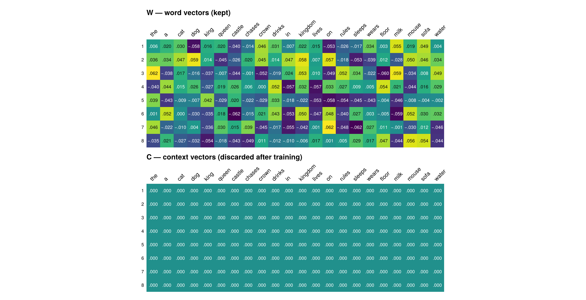
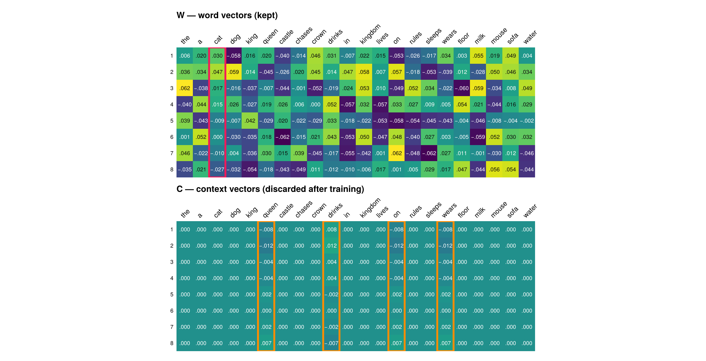
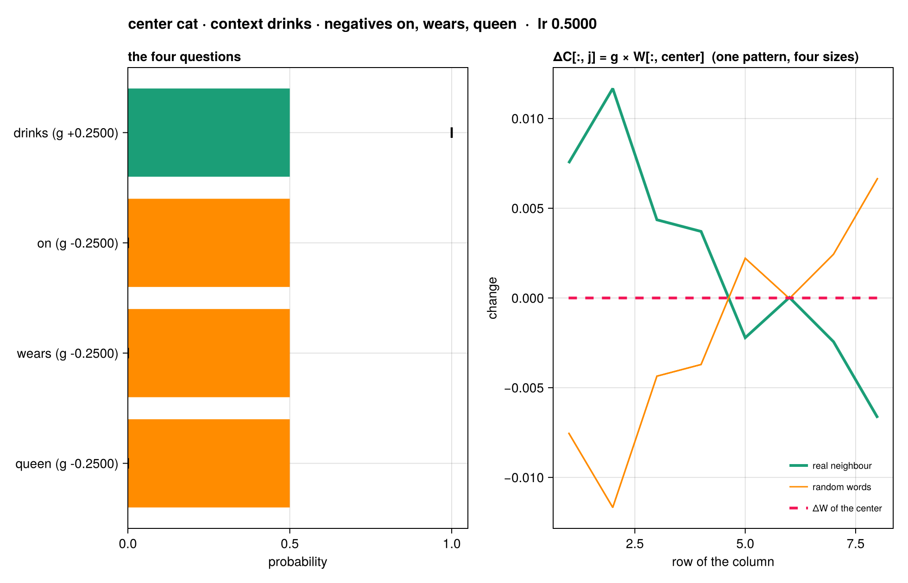
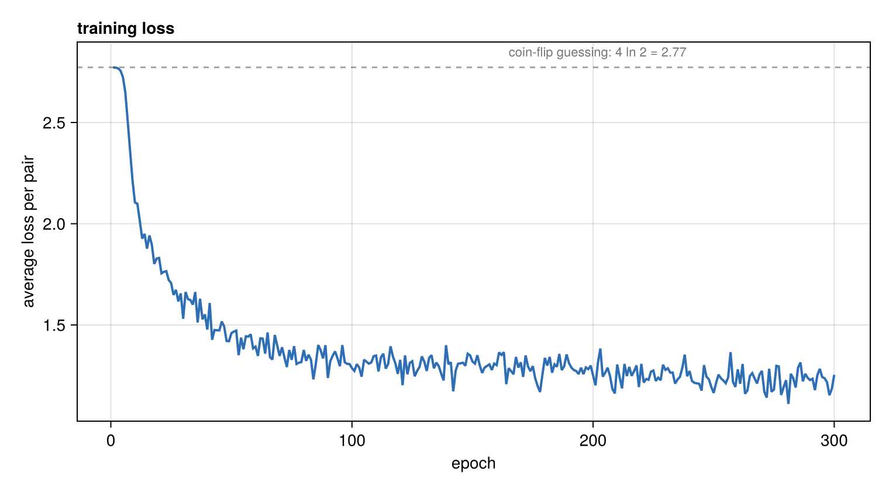
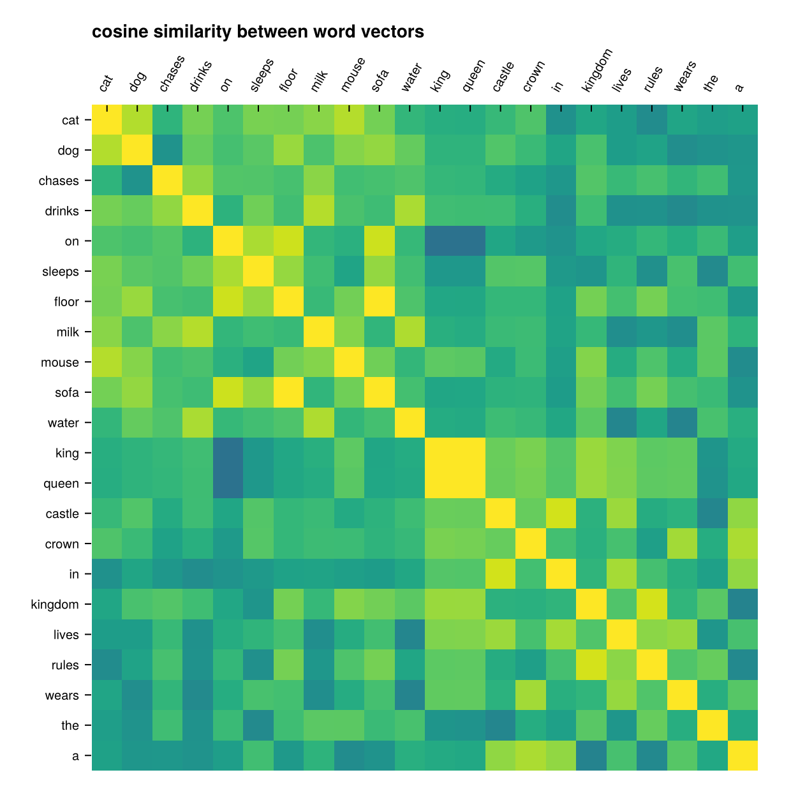
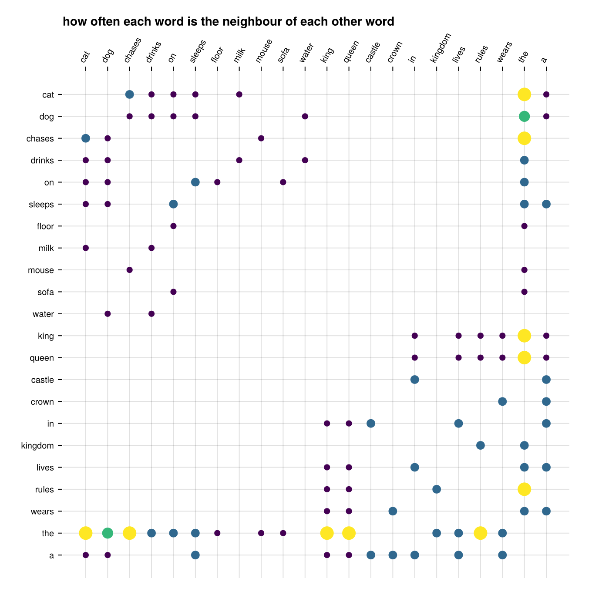
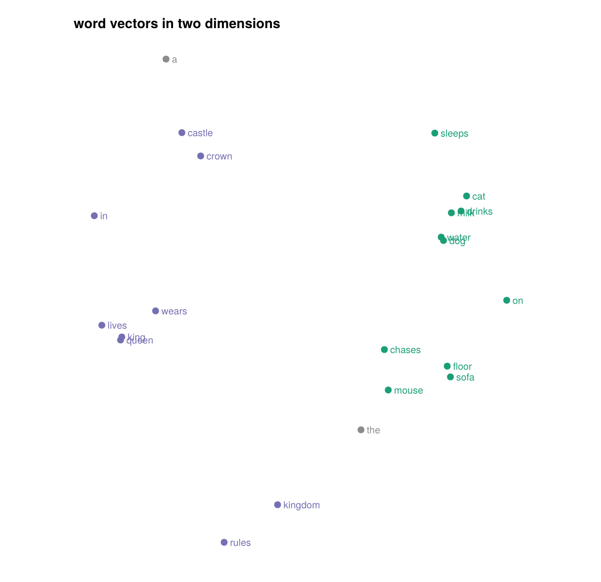
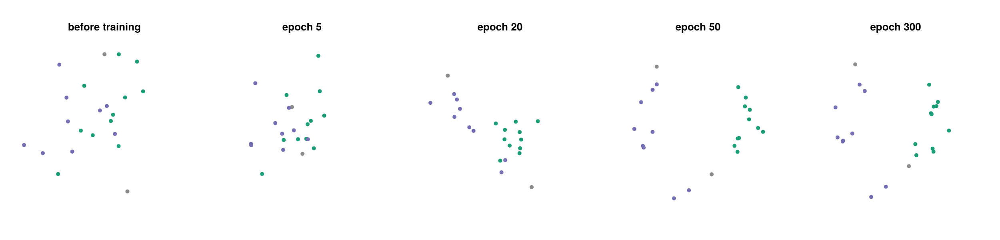

Reading the plots
Loading any Makie backend activates the plotting methods. Nothing else changes: the core package keeps no plotting dependency.
using CustomTokenizer, CairoMakie
sentences = tokenize(TOY_TEXT)
vocab = build_vocab(sentences)
model = Model(vocab)
pairs = corpus_pairs(sentences, vocab; window = 2)The two tables
plot_tables draws W above C on one viridis scale, with the value in every cell. Before training, W is small and random and C is exactly zero:
plot_tables(model)
One update
Pass an UpdateInfo and the columns it touched are outlined — one in W, up to four in C:
info = update_pair!(model, "cat", "drinks", ["on", "wears", "queen"], 0.5)
plot_tables(model; highlight = info)
plot_update shows the same update as arithmetic: the four questions with their guesses, and the change each C column receives. The four ΔC curves have the same shape because each is a multiple of the center's column.
plot_update(model, info)
Training
trainlog = train!(model, pairs; epochs = 300, snapshots = [0, 5, 20, 50, 300])
plot_loss(trainlog)
The dashed line is 4ln2, the cost of guessing 50/50 on four questions.
What the model learned
plot_similarity_matrix compares every pair of word vectors. Pass an order to group related words and make the block structure visible:
groups = Dict(w => (w in ("the", "a") ? :other :
w in ("king", "queen", "kingdom", "rules", "wears", "crown",
"lives", "in", "castle") ? :royal : :animal)
for w in vocab.words)
order = sortperm(collect(1:length(vocab));
by = i -> (groups[vocab[i]] === :animal ? 1 :
groups[vocab[i]] === :royal ? 2 : 3, i))
plot_similarity_matrix(model; order = order)
Two bright blocks: the model recovered the two kinds of sentence without being told they exist.
The table it learned from
plot_cooccurrence draws the counts themselves — the complete list of what the model was ever told:
N = cooccurrence(sentences, vocab; window = 2)
plot_cooccurrence(N, vocab; order = order)
The vectors in two dimensions
plot_embedding_map(model; groups = groups)
How they got there
plot_evolution projects every snapshot onto the axes of the last one, so the frames are comparable. Watch the words collapse into one knot around epoch 10 — every word first learns the same lesson, that the is nearby — and then separate:
plot_evolution(model, trainlog.snapshots; groups = groups)